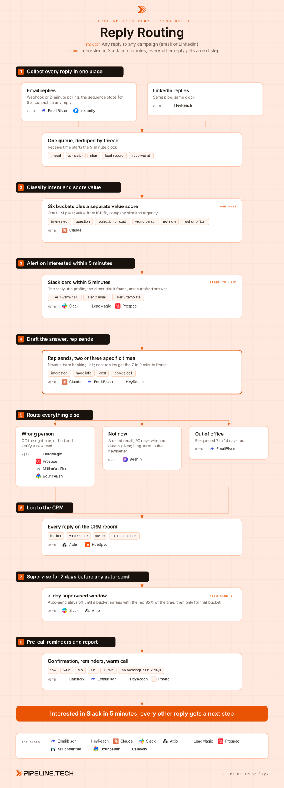

Play 11 · Send, reply and conversion
Reply Routing
Give this to your agent
Install the Pipeline.tech "Reply Routing" outbound play. Fetch https://raw.githubusercontent.com/pipeline-tech/plays/main/core/SKILL.md and https://raw.githubusercontent.com/pipeline-tech/plays/main/plays/reply-routing/SKILL.md, save them as ~/.claude/skills/pipeline-outbound-core/SKILL.md and ~/.claude/skills/pipeline-reply-routing/SKILL.md, then run /pipeline-reply-routing.
Paste into Claude Code. It installs the shared core rules plus this play, then runs it as /pipeline-reply-routing.

Workflow, generated from the skillOpen full size
A reply is the most expensive thing a campaign produces, and most teams answer it hours later with a bare booking link. After 20 minutes the chance of a meeting drops by half or more, so this play runs on one clock. Every reply gets a bucket, a value score and a next step, and the rep only touches the ones that need a human.
Load pipeline-outbound-core first. Where a step says "apply core", follow that section of the core skill.
Inputs
Ask for these before step 1, and save them to ./pipeline-plays.config.json:
- Stack answers from core section 1, plus the Slack channel and its owner.
- The ICP in one paragraph, used by the value score.
- The offer in one sentence, one proof point and the booking link.
- Rep hours and time zone, and whether a newsletter exists.
Steps
1Collect every reply in one place
ToolsEmailBisonInstantly (option)HeyReach
- Turn on the sender's reply webhook, or poll the replies endpoint every 2 minutes. LinkedIn replies come in the same way.
- Attach the thread, campaign, step, lead record and receive time, which starts the 5 minute clock. Dedupe by thread.
- Stop the sequence for that contact the moment any reply lands. Apply core: send rules.
2Classify intent and score value
ToolsClaude
- One pass, two outputs. First the intent bucket, exactly one of six: interested, question or more info, objection or cost, wrong person or referral, not now or long-term, out of office or auto-reply.
- Second a value score from 1 to 5 from ICP fit, company size and urgency in their words. Keep it separate from intent.
- Return a one-line reason and a confidence. Below 0.7 the rep picks the bucket in Slack, and the choice is kept as a labelled example for step 7.
- "Not interested", "unsubscribe" or "stop" is not a bucket and gets no reply. Mark do-not-contact in the sender and the CRM, log it, done.
3Alert on interested within 5 minutes
ToolsSlackLeadMagicProspeo
- Interested and question replies post to Slack inside 5 minutes of receive time. The card carries the reply, profile, value score with reason, direct dial if found, and the draft from step 4.
- Apply core: tiering. Score 4 or 5 is Tier 1: the owner calls the direct dial first, then sends the written answer. Score 3 adds a LinkedIn connection. Score 1 or 2 gets the written answer only.
- Measure receive time to first human action. The median is the play's KPI.
4Draft the answer, rep sends
ToolsClaudeEmailBisonHeyReach
- Every draft: under 100 words, in the thread, from the inbox that got the reply, no greeting line, no re-pitch, no repeat of a hook from the cold email. The rep edits and sends.
- Interested: thank them in one line, share the proof point, propose two or three specific afternoon slots in the next 2 to 4 business days, computed from today. The booking link rides along with the times, never alone.
- More info: a short neutral breakdown, the proof point, a soft time proposal. Agreed to a call then went quiet: place a slot and say it is on the calendar.
- Cost: the pricing model in two sentences, it depends on scope, ask for 7 to 9 minutes. The odd number reads as specific and low commitment.
- Objection: acknowledge in one line without defending, then a lower-commitment ask (a 15 minute walk-through).
5Route everything else
ToolsLeadMagicProspeoMillionVerifierBounceBanEmailBisonBeehiiv (optional)
- Wrong person with a name: reply in the thread, CC that person, reference the conversation, restate the offer in one line. Without a name: ask for the right title, then find the contact. Apply core: enrichment. Apply core: verification. The new lead enters a fresh sequence with
source: referral. - Not now: one line accepting the timing, a dated recall in the CRM (their date, default 6 months), a newsletter add if one exists.
- Out of office: no reply. Re-queue the same step 7 to 14 days out, or the day after a stated return date.
6Log to the CRM
ToolsAttioHubSpot (option)
- Apply core: CRM and alerts. Every reply writes bucket, score, reason, action, owner, minutes to first action and the thread link. Recalls and re-queues are dated tasks, not notes.
- Interested with a proposed time opens a deal. No-shows and disqualified calls stay deals, in a lost stage, so the funnel counts every booked call.
7Supervise for 7 days before any auto-send
ToolsSlackAttio
- For the first 7 days the rep approves or edits every draft in every bucket. Record approved, edited or wrong bucket, then compute agreement per bucket at day 7.
- Auto-sending is off by default. The user may turn it on per bucket at 95 percent agreement with at least 20 examples, and only for out of office re-queues, not-now acknowledgements and named-referral CCs. Interested, more info, cost and objection are always sent by a human.
8Pre-call reminders and report
ToolsCalendlyEmailBisonHeyReachPhone
- Never book more than 2 days out. On booking: confirmation email with a 60 second video. Reminders at 24 hours, 4 hours, 1 hour, and 10 minutes before with a reschedule option. Tier 1 also gets a LinkedIn connection and a call a few hours before.
- Weekly: replies, bucket mix, median minutes to first action, meetings, show rate, agreement per bucket.
- Apply core: credits and handoff.
Guardrails
- The 5 minute clock runs in rep hours only; outside them the action is due 5 minutes into the next working hour. Never auto-send to beat it.
- Never a bare booking link. Times first, link second, same message.
- A direct dial found for a reply is for the warm call about that reply. It never moves into a cold calling block; cold dialing has its own play and its own consent rules.
Example run
User: "/pipeline-reply-routing for our outsourced SDR offer, Slack channel #replies, I work 9 to 5 Eastern"
- Confirmed the webhook, LinkedIn tool, CRM and channel. Loaded the ICP and proof point.
- Week one: 148 replies. 41 interested or more info, 12 cost, 9 objection, 17 wrong person, 23 not now, 46 out of office. 6 bucketed by hand.
- 53 Slack cards, median 2 minutes 40 seconds to card. 11 Tier 1, 7 with a direct dial, 4 calls connected.
- 53 drafts sent after rep edits, 19 meetings booked inside 2 days, 15 showed.
- 17 wrong-person replies became 13 CCs and 4 new verified leads. 23 recalls dated, 46 re-queued 10 days out.
- Day 7 agreement: out of office 100 percent, not now 96 percent, referral CC 88 percent. Auto-send on for the first two only.
Run this play with usPipeline.tech runs Reply Routing end to end for clients: infrastructure, lists, copy, sends and replies.
Book a callView on GitHub